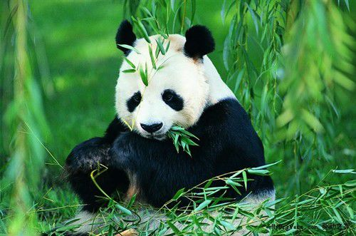
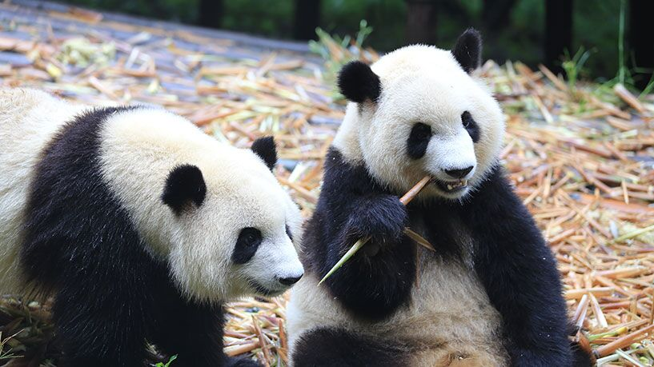
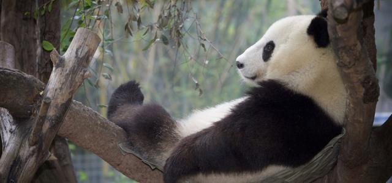

首页》简介
形态体征
大熊猫体型肥硕似熊、丰腴富态，头圆尾短，头躯长1.2-1.8米，尾长10-12厘米。体重80-120千克，最重可达180千克，饲养的熊猫略重，一般雄性个体稍大于雌性。头部和身体毛色黑白相间分明，但黑非纯黑，白也不是纯白，而是黑中透褐，白中带黄。秦岭地区的个体偏大，体毛粗糙，腹毛略呈棕色色泽。岷山（尤以青川平武）则个体较小，体毛也较前者为细，腹毛棕色不明显，但凉山的个体并不偏小。
黑白相间的外表，有利于隐蔽在密林的树上和积雪的地面而不易被天敌发现。相对锋利的爪和发达有力的前后肢，有利于大熊猫能快速爬上高大的乔木。
生活习性
大熊猫的食物营养低劣，不能有过多的能量贮存。为了保存能量，必须控制能量消耗过大的活动。因此，它喜欢在平缓的地方行走，避免爬坡。平时也只在一个小范围里活动，利用气味、声音等传递信息，相互之间并不直接接触。大熊猫除吃竹子外，也吃一些杂草等其他植物，但吃进的量极少。此外，它也并非真正的“和尚”，遇到机会，也要开一次“荤”，恢复一下其祖先的本性。例如在它的栖息地内分布着一种害鼠，名叫竹鼠，俗称“竹溜子”，专吃箭竹的地下根，使箭竹枯死。但它的肉却是鲜嫩可口，营养丰富，正像当地的一句俗话中所说的：“天上的斑鸠，地上的竹溜”。
圈养大熊猫主要以某一种或几种低山平坝竹为主食，辅食是以谷物类为主所调制的精饲料。竹类是大熊猫生长发育、身体健康和正常繁育的关键所在。随着大熊猫饲养技术的提高，逐渐认识到为大熊猫提供喜食的高山或亚高山竹类对于其身体健康和正常繁育的重要作用；加上交通条件的改善。圈养条件下，也能人工为大熊猫提供大量高山或亚高山的喜食竹类。
栖息环境
大熊猫栖于中国长江上游的高山深谷，为东南季风的迎风面，气候温凉潮湿，其湿度常在80%以上，它们是一种喜湿性动物。大熊猫生活的6块狭长地带，包括岷山、邛崃山、凉山、大相岭、小相岭及秦岭等几大山系，横跨川、陕、甘3省的45个县（市），栖息地面积达20000平方公里以上，种群数量约1600只，其中80%以上分布于四川境内。它们活动的区域多在坳沟、山腹洼地、河谷阶地等，一般在20°以下的缓坡地形。这些地方森林茂盛，竹类生长良好，气温相对较为稳定，隐蔽条件良好，食物资源和水源都很丰富。
大熊猫生活在海拔2600-3500米的茂密竹林里，那里常年空气稀薄，云雾缭绕，气温低于20℃。一些其他的因素也会影响野外大熊猫的分布和密度：竹子、地形、水源的分布，是否有藏身处和哺育幼仔的巢穴以及山势等。人为的干扰是现今影响大熊猫分布的主要因素。